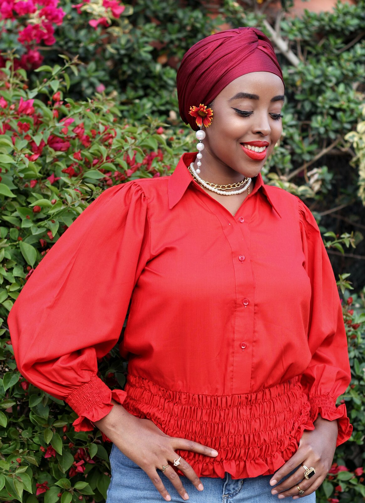

2017
First booking
A friend's son turning one. Three hundred frames, two of which are still on her wall.
Chapter II.About the photographer

“Photography is not my life. It is the magic in my life. Once the mystery is over, so is the magic.”
I picked up a camera as a hobby almost a decade ago and never quite put it down. What started as something I did for friends and cousins became a small studio, then a steady business, and then nine years of work I am proud of.
I have photographed first cries, first nikahs, last anniversaries, and at least three hundred birthday cakes. I have shot brand campaigns from a kitchen counter and weddings from the corner of a room. The thread through all of it is the same: the people, and the light, and being trusted to keep both.
I now live in Berkeley with my own small chapter of life unfolding here. I take work within two to three hours of the Bay Area, and I will travel further for weddings and longer commissions. I bring everything I learned in Karachi with me. The patience. The pace. The care.
I.How I work
Soft, natural, and slow when possible. Studio strobes only when the moment calls for them.
Babies on their schedule. Toddlers without bribes. Adults without forced poses. The good frames live in the in-between.
I bring ideas to every session, but the story belongs to you. Your home, your people, your aesthetic.
True skin tones. Honest colors. Light retouching only on request. The goal is a photograph that ages gracefully.
Private online gallery within two to three weeks. Print release included. Albums and prints available on request.
II.The chapters so far
2017
A friend's son turning one. Three hundred frames, two of which are still on her wall.
2019
Trained in newborn safety and posing. Built a small in-studio set in Karachi.
2021
Steady work for modest fashion houses, small ateliers, food, and packaging.
2024
A new chapter on the West Coast. Same practice. New light. Bay Area now home base.
III.Tools of the trade
IV.Begin
I respond personally to every inquiry. Tell me a little about the people, the date, the room, and we will find a way.
Begin an inquiry